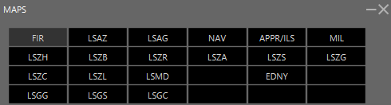

IVAC2
Introduction¶
First of all, we are happy to help you getting started with the FIR Definition of Switzerland. You will learn how it works, and how you can use it to open a position. In each case this document IS NOT the documentation about the Software IvAc v2, but ONLY the documentation for the FIR Definition Switzerland. Then, the FIR Definition of Switzerland is completed at a level you can open a position without any problems, but there will always be improvements or updates. If you have any suggestions, problems or anything to share about the FIR Definition, please post on the corresponding topic in the Forum of IVAO Switzerland. And finally, we just wanted to remind you that it is not possible to change the colors, the files or the FIR Definition by yourself as you could do it with IvAc 1. IvAc v2 uses a centralized database with the FIR Definitions, and each time you launch IvAc v2 it will check if there is a new version online.
Maps¶
Let’s start with the Maps menu, which looks like this:

The Maps menu is ordered as follows:
-
First line: Basic maps and FIR maps
-
Second line: LSAZ FIR Main Airports
-
Third line: LSAZ FIR Secondary Airports
-
Fourth line: LSAG FIR Main Airports
What will you find inside ?
FIR:All maps regarding GEO, like Borders/Lakes and so on.
LSAZ: Main maps of LSAZ
LSAG: Main maps of LSAG
NAV: Navigational data, divided in 2 groups (Inside CH and Exterior)
APPR/ILS: All approaches and procedures implemented in the FIR Definition
MIL: Military sectors
LSxx: Airport specific maps, the format and the names of the maps are standard across all airports.
Presets & Insets¶
First of all, you have to know that we have 2 label definitions in Switzerland. One is for ACC Control, the other for Arrival/Departure Control.
Labels¶
First of all, you have to know that we have 2 label definitions in Switzerland. One is for ACC Control, the other for Arrival/Departure Control. The Ground labels are common for both definitions, they are composed of following categories:
-
Ground Default
-
Ground Departure traffic
-
Ground Arrival traffic
-
Ground Vehicle
The Airborne labels are composed of following categories:
-
Airborne psr (sqwk SBY)
-
Airborne default (default airborne label)
-
Airborne concerned (label when your sector has been set NEXT)
-
Airborne assumed (assumed label)
-
Airborne filtered (label when filter is active)
-
Airborne released (released label)
We will cover all of them in this document, as the labels we have in IVAC2 have nothing to do with the ones of IVAC1.
General knowledge about labels
Extended label: You will notice quite fast that you have more or less information on a label depending if you hover your mouse on it or not. This is called the extended label.